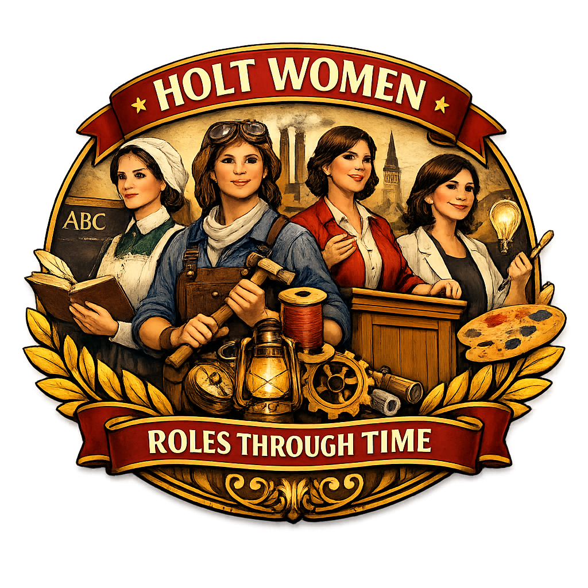

Holt Women Trailblazers Index
This index lists notable women connected to the Holt families of Lancashire, Yorkshire, Derbyshire, and beyond. Each entry links to a dedicated page containing a full biography, sources, and contextual notes. These stories of Holt women reveal the social, economic, and migratory forces shaping the families across centuries.

Manchester & Withington
- Lady Margaret Holt (née Lupton) – Philanthropist and wife of Sir Edward Holt (II); active in Manchester civic life.
- Lady Elizabeth Holt (née Brooks) – Wife of Sir Edward Holt (I); associated with the Manchester brewing dynasty.
Liverpool
- Emma Georgina Holt – Educational benefactor and daughter of George Holt of Sudley House.
Bacup
- Emily Sarah Holt, sister of James Maden Holt, – Prolific Victorian novelist and historian; daughter of John Holt of Stubbylee
Castleton (Rochdale)
- Dorothy Holt of Castleton – Founder of the Castleton School; remembered for her 1717 charitable bequest.
- Agnes Holt of Castleton – Early 16th‑century Holt matriarch; wife of Adam Holt.
- Dorothy Holt (Civil War Era) – Married into the Entwistle family during the mid‑17th century.
Castleton Hall Heiresses (daughters of James Holt)
- Frances Holt – Co‑heiress of Castleton Hall.
- Elizabeth Holt – Co‑heiress of Castleton Hall.
- Isabella Holt – Co‑heiress of Castleton Hall.
- Mary Holt – Co‑heiress of Castleton Hall.
Stubley, Littleborough
- Mary Holt of Stubley – 16th‑century Holt; married Charles Holt of Whitwell.